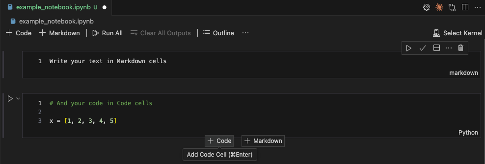

Learning Objectives
Introduction
Often one of the most frustrating parts of learning to code is understanding and properly utilising the tools that are used to execute and edit the code, which can sadly lack the cohesive logic found in the language itself.
We'll run through a few basics that will help you get started, starting from using the terminal (Mac & Linux) or command line (Windows), to what common code editors are available, and the basics of Jupyter Notebooks: an interactive coding environment we will use heavily in this course.
Using Python in the Terminal
What is the Terminal?
The terminal (also called command line interface or CLI) is a text-based interface that allows you to interact directly with your computer's operating system through typed commands. Originally, this was the primary way people interacted with computers before graphical user interfaces (GUIs) became widespread in the 1980s.
While it might seem outdated compared to clicking buttons and dragging files, the terminal remains an incredibly powerful tool for developers. It provides direct access to system functions, allows for automation through scripts, and often offers more control and flexibility than graphical alternatives. Additionally, you may find yourself having to use a headless (no graphical interface) setup, such as an institutes computing cluster or remote hardware.
For Python specifically, the terminal allows you to run scripts, install packages, manage virtual environments, and access the interactive Python interpreter (REPL) quickly and efficiently.
Terminal OS Differences
Different operating systems provide various applications to access the terminal:
- Windows: Command Prompt (cmd), PowerShell, Windows Terminal (recommended for Windows 10/11)
- Mac: Terminal (built-in)
- Linux: Varies by distribution—GNOME Terminal, Konsole, xterm, among others
Command Differences
One key difference you'll encounter is how Python is invoked:
- Windows: Both
pythonandpycommands are available, withpybeing the Python launcher that's often more reliable - Mac/Linux: Typically use
pythonorpython3, depending on your installation
File Paths
File paths are represented differently across operating systems:
- Windows: Uses backslashes (
C:\Users\YourName\Documents\script.py) - Mac/Linux: Uses forward slashes (
/Users/YourName/Documents/script.py)
In Python a backslash (\) is a character that denotes the start of an escape sequence (which allows normally disallowed characters to be inputted). As Windows paths include backslashes, this will cause an error. To get around this you need to place an r before your path like so: r"C:\Users\YourName\Documents\myData.csv", or use double backslashes: "C:\\Users\\YourName\\Documents\\myData.csv", or there are built-in functions that automatically handle all path types. This will be made clearer in the lessons.
Case Sensitivity
File and directory (folder) names are treated differently:
- Mac/Linux: Case-sensitive (
MyFile.pyandmyfile.pyare different files) - Windows: Case-insensitive (
MyFile.pyandmyfile.pyrefer to the same file)
Terminal Basics for Python
Opening the Terminal
- Windows: Press
Win+R, typecmdorpowershell, and press Enter. Alternatively, search for "Command Prompt" or "PowerShell" in the Start menu - Mac: Press
Cmd+Space, type "Terminal", and press Enter. Or navigate to Applications > Utilities > Terminal - Linux: Typically
Ctrl+Alt+T, or look for Terminal in your applications menu
Navigation Commands
Essential commands for moving around your file system:
Changing directory
Navigating the terminal is one of the most common commands, use cd to find the right folder to modify and execute your files.
cd Documents: move to Documents foldercd ..: move back one directory levelcd ~: move to home directory (Mac/Linux)cd /: move to root directory (Mac/Linux)
Showing files in a folder
Without the help of a file finder graphical interface you often won't remember the full file name. To remind us can use ls or dir to list files and folders in the current directory:
- ls (Mac/Linux)
- dir (Windows)
Showing files in a folder
The current directory path is used in a lot of downstream terminal tasks, so you will often need to print it to screen to copy. Use pwd or cd alone to show the current directory path in the terminal.
- pwd (Mac/Linux)
- cd (Windows without anything after)
Python REPL
The Python REPL (Read-Eval-Print Loop) is an interactive Python shell where you can type Python commands and see immediate results. To start it, simply type python (or py on Windows) in the terminal. You'll see something like:
Python 3.13.2 (main, Feb 12 2025, 14:59:08) [Clang 19.1.6 ] on darwin
Type "help", "copyright", "credits" or "license" for more information.
>>>The
>>> prompt indicates you're now in Python mode. You can type any Python code and press Enter to execute it immediately. To exit the REPL, type exit() or use Ctrl+D (Mac/Linux) or Ctrl+Z then Enter (Windows).
Python Files
Python files have a .py extension and contain your Python code. You can create these files using text editors such as Notepad (Windows) or TextEdit (Mac), although this is not recommended. Instead, most users utilise more sophisticated editors called integrated development environments, which we'll cover in the next section.
Running a Python file
To run a Python file from the terminal, navigate to the directory containing your file and use:
python filename.pyFor example, if you have a file called
hello_world.py, you would run:python hello_world.pyRunning
python not within an environment (see the later section) will call the main Python installation and packages. Later lessons will talk about setting up environments in more detail.
Integrated Development Environments
What is an IDE?
An Integrated Development Environment (IDE) is a software application that combines a text editor with additional tools specifically designed for software development.
Unlike basic text editors, IDEs provide additional tools to improve your coding experience:
- Syntax highlighting: Code is coloured to make it easier to read and spot errors
- Error detection: Many mistakes are highlighted before you even run your code
- Integrated terminal: Run files without having to open a new terminal
- Debugging tools: Step through your code line by line to find and fix problems (more for developers)
- Code completion: Suggestions and auto-completion as you type
- Project management: Organise multiple files and folders efficiently
What is syntax? Programming syntax refers the set of rules that dictate the structure and format of a programming language, without the set structure the code would not be read correctly by the interpreter.
L2D Recommendation: Visual Studio Code
Visual Studio Code (VSCode) is our recommended IDE for this course. It's a free, open-source code editor developed by Microsoft that has become incredibly popular among developers due to its flexibility and performance. It will be the IDE used by your demonstrators in this course, as well as the one used with GitHub CodeSpaces (covered in Course setup).
VSCode can be a bit overwhelming at first as it has a wealth of options. Many of the tools come in the form of extensions, which can be added to invoke things such as syntax colouring.
To install, visit the VSCode website and follow the instructions for your OS.
After installation, open VSCode and install the Python extension:
- Click on the Extensions icon in the left sidebar (or press
Ctrl+Shift+X) - Search for "Python" and install the official Microsoft Python extension
- This extension provides syntax highlighting, debugging, code completion, and more
Other Notable IDEs
Spyder
Spyder (Scientific Python Development Environment) is an IDE specifically designed for scientific computing and data analysis. It comes with Anaconda by default and provides a MATLAB-like interface that many researchers find familiar. Spyder includes variable explorers, integrated plotting, and debugging tools tailored for data science workflows.
PyCharm
Developed by JetBrains, PyCharm is a professional IDE with powerful features for Python development. It comes in both free (Community) and paid (Professional) versions. PyCharm excels in code analysis, refactoring tools, and advanced debugging capabilities. The Professional version includes additional features for web development and scientific tools.
Cursor
Cursor is a newer IDE that integrates AI assistance directly into the coding experience. Built on VSCode's foundation, it provides AI-powered code completion, explanation, and generation features. While still evolving, it represents an interesting direction for AI-assisted development. AI usage in Curson is limited without a subscription or a link to a paid GenAI account.
Jupyter Notebooks
What is a Notebook?
Jupyter Notebooks are interactive documents that combine code, text, and visualisations in a single file. Unlike traditional Python scripts that contain only code, notebooks allow you to intersperse your code with explanatory text, mathematical equations, and rich media outputs like graphs and images.
They all allow you to run small snippets of code (cells) one at a time, viewing their output instantly, rather than waiting for the whole script to run. This format makes it perfect for exploratory science, as you can pay about with your data on, making changes on the fly and observing its effects with visualisations. Once settled, you can enrich the outputs with your thoughts and context to make it a true digital lab notebook.
Cell-based Structure
Notebooks are organised into cells, which are individual blocks that can contain either code or text, see below:

As can be seen above, notebooks contain two main types of cells:
- Code cells: Enter Python code into these so that they can be executed.
- Markdown cells: Enter text formatted text, mathematical equations, and documentation into these cells.
You can change cell types using the dropdown menu in the toolbar or keyboard shortcuts (typically 'M' for Markdown, 'Y' for code when in command mode).
This structure allows you to:
- Run small sections of code independently
- See immediate results after each cell execution
- Modify and re-run specific parts without restarting the entire program
- Build your analysis step-by-step with explanations between each step
Basics of Using Jupyter Notebooks
To use Jupyter Notebooks, you'll first need to install the necessary packages. If you installed Python through Anaconda, Jupyter is included. Otherwise, install it using:
python -m pip install jupyterWe will explain in more detail how to install packages for Python in PF3, so don't worry too much about this for now. All of these parts will be set up for you in the Codespace we create for you through Github, see Course setup.
In VScode
To work with a Jupyter notebook in VScode you must also install the Jupyter extension from the extension marketplace.
After installing the Jupyter extension you can create a new notebook by:
- Opening the Command Palette (
Ctrl+Shift+PorCmd+Shift+P) - Typing "Jupyter: Create New Notebook"
.ipynb extension.Running Cells
There are several ways to execute cells:
- Shift+Enter: Run the current cell and move to the next one
- Ctrl+Enter: Run the current cell and stay on it
- Toolbar buttons: Click the play button to run individual cells
- Run All: Execute all cells in the notebook sequentially
Other Important Buttons and Features
- Restart kernel: Sometimes your notebook's memory gets cluttered or you encounter errors. The kernel is the computational engine that runs your code; restarting it clears all variables and starts fresh
- Clear all outputs: Remove all the output displays from your notebook, useful for sharing clean versions
- Save: Regularly save your work (
Ctrl+SorCmd+S) - Add cells: Use the '+' button to add new cells above or below the current one
Good Practices
- Annotate your code: Use Markdown cells to explain your thought process, describe what each section does, and note interesting findings
- Keep cells focused: Each cell should represent a single logical step or concept
- Run cells in order: Notebooks can be run out of sequence, but this can lead to confusion
Packages & Environments
What Are Packages
Python packages are additional pieces of code that other developers have written and shared, extending Python's capabilities. These can range from simple utilities to complex frameworks for machine learning or computational biology analysis pipelines. Packages are one of Python's great strengths, as within this vast ecosystem there is normally some code already created that meets your research/project needs. You simply just have to install it, integrate it into your work, and use it.
However, installing packages comes with some issues. Each package requires specific versions of other packages or Python itself. When you have a few, this may cause conflicts that break the usage of the packages and this is where environments are useful.
We will cover installing and import packages into your workspace in PF3.
What are Environments
Environments are isolated Python installations that contain their own specific set of packages and dependencies. Think of an environment as a self-contained Python setup that exists independently from your main Python installation and from other environments on your system. This allows you to only install the combination of packages you need for a project, ones you know work together (package managers like conda and uv handle this automatically).
An example:
- Project A might need pandas version 1.5.0 and numpy version 1.20.0
- Project B might need pandas version 2.0.0 and numpy version 1.24.0
To be Demonstrated Later
We will demonstrate in a later release how to handle environments and package installation yourself, but for now just understand its importance.
The future resources will cover:
- Creating Environments:
python -m venv environment_name - Activating and Deactivating environments: OS specific
- Installing Packages:
python -m pip install